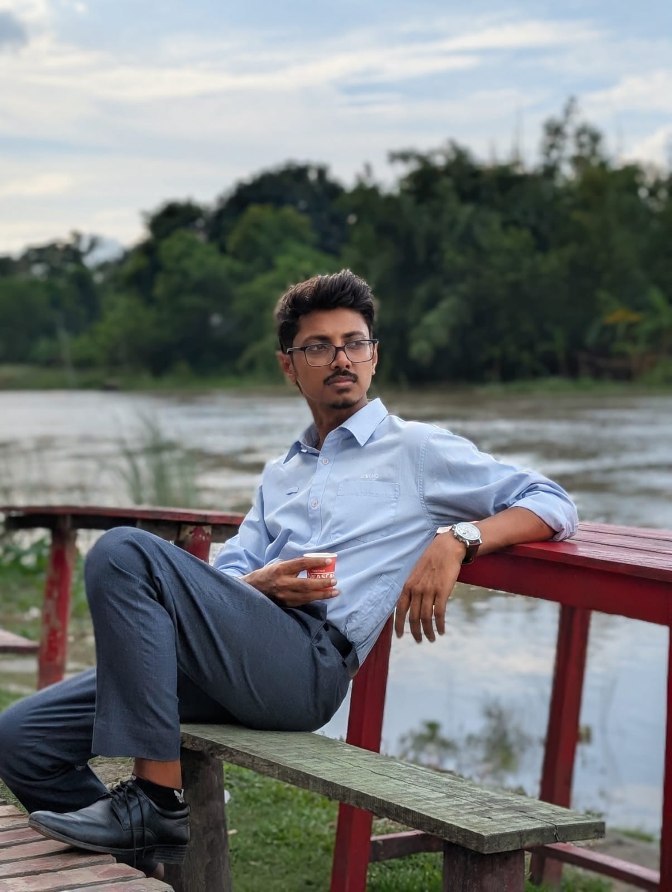

Public-sector digitalisation
MIS System Trainer on the Village Court Management Information System (VCMIS), supporting training and practical system adoption with UNDP and the Government of Bangladesh.
I work across technology, MIS training, software quality and IoT research — creating practical solutions that help people and organisations work better.

I use technology and clear communication to solve practical problems and support people.
I am a Computer Science and Engineering graduate with professional experience in MIS system training, technical support, software testing, research and digital systems.
My interests include IoT, data analysis, intelligent systems, software technologies and technology-driven solutions for real-world problems.
MIS System Trainer on the Village Court Management Information System (VCMIS), supporting training and practical system adoption with UNDP and the Government of Bangladesh.
IoT-based monitoring of noise, CO₂ and heat pollution on urban roads, selected for the 2nd Global Cleaner Production Conference 2026 in Sitges, Spain.
Former General Secretary of the Primeasia University Sports Club, with experience in debating, event coordination, teamwork and public speaking.
Worked as a trainer on the Village Court Management Information System (VCMIS), a UNDP-supported project in collaboration with the Bangladesh Government and development partners. Delivered training to approximately 404 government officials on system workflows and digital case management, supported practical demonstrations, gathered user feedback, and reported software bugs and improvement opportunities.
Supported finishing-department operations using the Trackwell management system, including packing-list tracking and operational reporting.
Worked with the Digital Marketing Team and participated in university communication, promotional and student engagement activities.
Projects and areas of work that represent my technical interests and practical experience.
An IoT-based real-time monitoring concept focused on collecting environmental data from urban roads in Dhaka City.
Practical system training, demonstrations, user support and digital workflow assistance for MIS-based operations.
Exploring data processing, visualisation, machine learning and statistical approaches for practical research problems.
Supporting students and peers with research ideas, technical implementation and academic project development.
An automated plant-care project designed to monitor soil moisture and activate watering when the plant needs water, reducing the need for constant manual care.
A robotics project focused on building a robot that follows a marked path using sensors and control logic. It reflects my hands-on interest in robotics and university-level LFR competitions.
My research explores an IoT-based system for monitoring noise, CO₂-related air quality and temperature on urban roads in Dhaka, combining sensor data collection with software analysis and time-series methods.
Primeasia University
Cantonment Public School & College, Jahanabad, Khulna
Govt. Laboratory High School, Khulna
Leadership, communication and extracurricular activities have been an important part of my university journey.
A sustained record in competitive debating, club leadership, televised debates and adjudication.
Progressed from Executive Member to Sub-Organising Secretary, Joint Secretary and finally General Secretary. Helped organise two central cricket tournaments, PAUCL Season 1 and Season 2, and contributed to the club's growth into one of the university's leading student clubs through event planning, coordination and sustained team involvement.
One of the founding members of the club; participated in around six line-following robot (LFR) competitions hosted by universities across Bangladesh.
Captained the departmental cricket team for approximately three years and played as a right-arm fast bowler for the university's central cricket team, including national-level tournaments.
Selected photographs from my personal archive — portraits, people, places, details and moments observed through a documentary and editorial lens. Click any photo to enlarge.


Photography · Portrait · Travel — available for selected collaborations.
Whether it is a research collaboration, technology project, professional opportunity, training initiative or simply a conversation around technology — feel free to reach out.